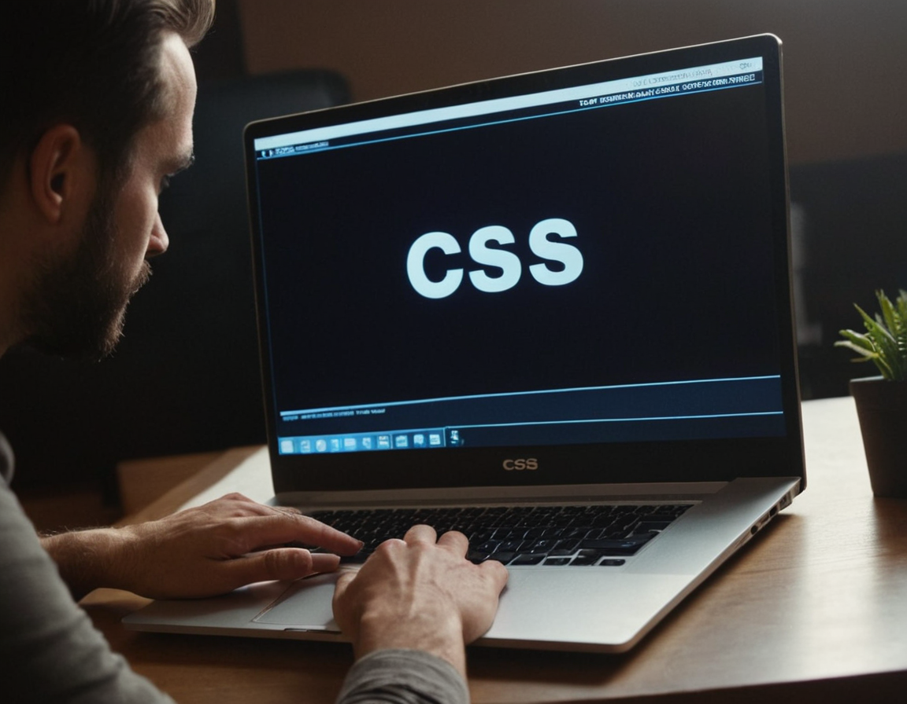

O que é CSS?
CSS, ou Cascading Style Sheets (Folhas de Estilo em Cascata), é uma linguagem de estilo utilizada para definir a apresentação e o design de documentos HTML. Enquanto o HTML é usado para estruturar o conteúdo de uma página da web, o CSS é usado para controlar o layout, as cores, as fontes e outros aspectos visuais dessa página. A principal função do CSS é separar o conteúdo do design de uma página da web, o que traz vários benefícios, incluindo: Separação de preocupações: O HTML é responsável pelo conteúdo da página, enquanto o CSS é responsável pelo design. Isso torna o código mais organizado, modular e fácil de manter. Flexibilidade e consistência: Com o CSS, você pode definir estilos consistentes em toda a sua página ou site, garantindo uma experiência visual coesa para os usuários. Facilidade de atualização: Se você deseja fazer alterações no design de um site, pode fazê-lo alterando apenas o arquivo CSS, sem precisar modificar o HTML. Adaptação a diferentes dispositivos: O CSS permite criar layouts responsivos que se ajustam automaticamente a diferentes tamanhos de tela e dispositivos, proporcionando uma experiência de usuário otimizada em desktops, tablets e smartphones. Em resumo, o CSS é uma ferramenta poderosa que permite aos desenvolvedores web controlar a aparência e o layout de suas páginas da web, garantindo uma apresentação visual atraente e uma experiência de usuário agradável.
